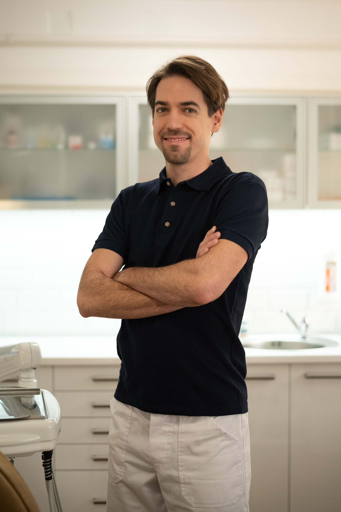
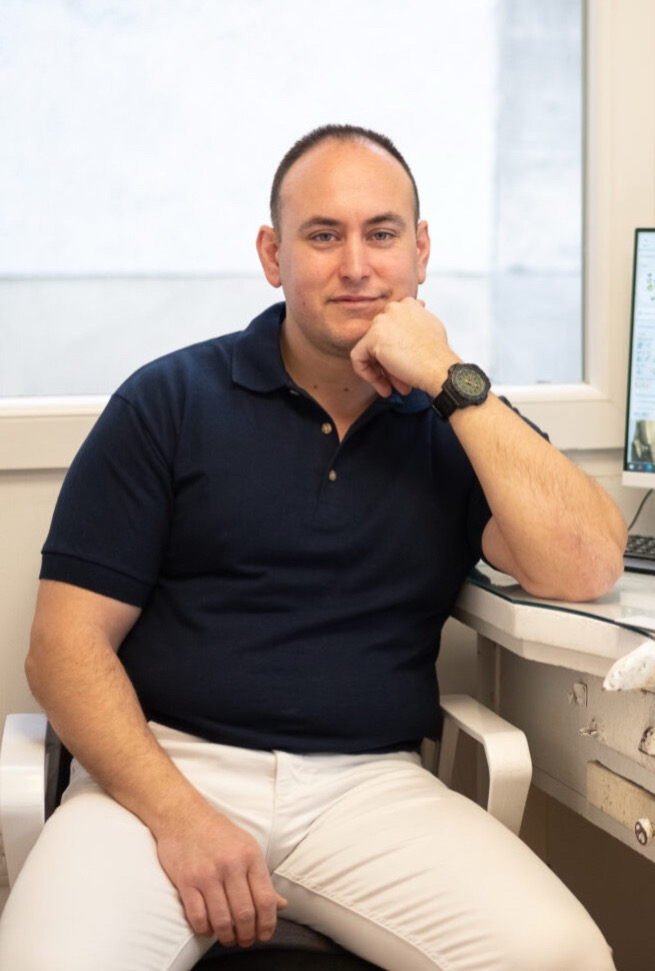

Fogászatunk Pápa kertvárosi részén, csendes környezetben található. A környező településekről autóval és tömegközlekedéssel is könnyedén megközelíthető.
Rendelőnkben fogtechnikai labor is található, ami pontosabb munkát, rövidebb határidőket eredményez.
A rendelőben kényelmes, modern akadálymentesített és minden igényt kielégítő barátságos légkört biztosítunk az ide érkező pácienseink és kísérőjük számára. A legkisebbeket kifestő és színesceruza várja, hogy oldott hangulatban készülhessenek a kezelésre.
Minden korosztály számára teljeskörű fogászati ellátást biztosítunk. Egy állapotfelmérés után orvosaink pontos tájékoztatást adnak a tervezett kezelések menetéről, és ezek várható költségéről.
Fontos számunkra, hogy a kezelések fájdalommentesek legyenek, csapatunk mindent megtesz azért, hogy biztonságban érezzék magukat nálunk .

